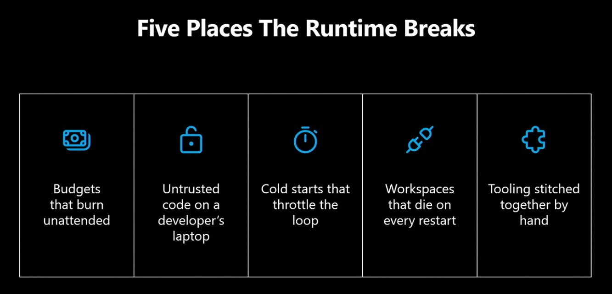
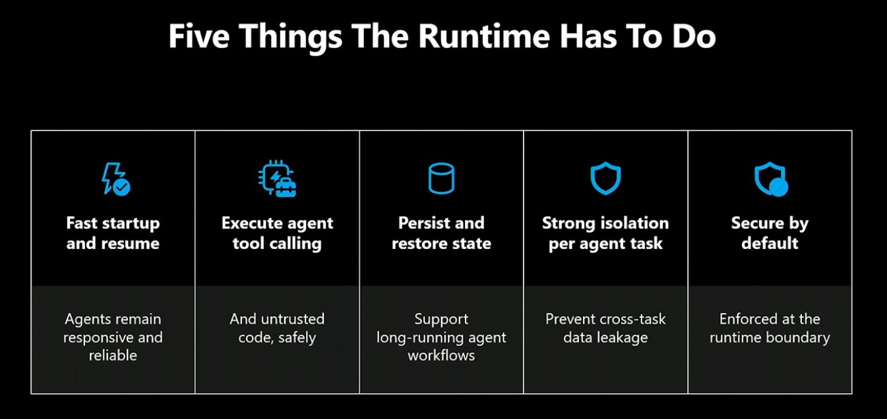

A lightweight slide-style shell for the BAUG talk on Microsoft Build 2026,
runtime-first AI agents, and why the platform may matter more than the model.
Damien Berry
This is the working presentation shell for the talk, the demo notes, and future
GitHub Pages content.
02 / Problem
Why agent projects fail

Runtime pain points behind failed AI agent
projects: cost,
isolation, persistence, latency, and environment complexity.
03 / Runtime
What an agent runtime must do

Runtime requirements that matter in production: cost
control, isolation, cold starts, state, connectors, and orchestration.